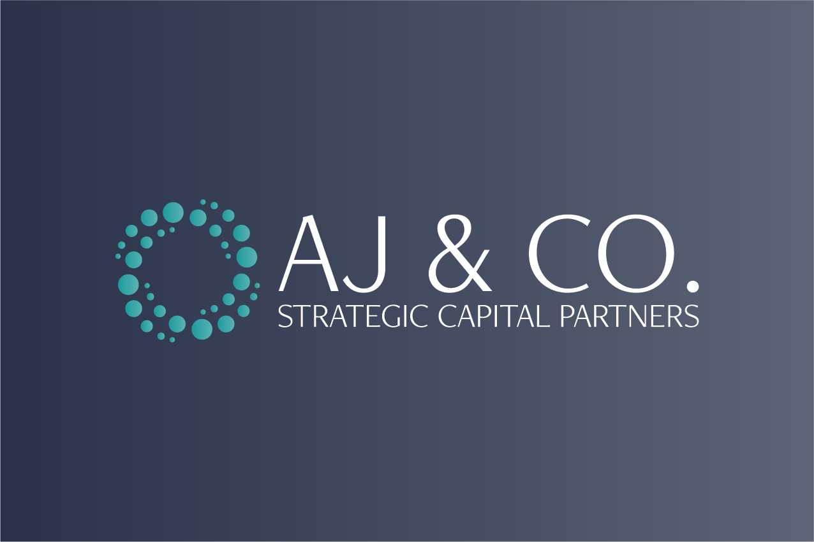

Core group
Jankelowitz Wealth Management
A financial services platform coordinating wealth management, capital solutions, bookkeeping, accounting, and strategic capital deployment across the Jankelowitz ecosystem.

Platform mandate
Financial infrastructure with a serious logo and suspiciously broad remit.
Jankelowitz Wealth Management supports the Group through capital solutions, accounting, bookkeeping, and project funding capabilities.
Capital coordination
Supports internal and external capital needs with institutional language, polished materials, and selective use of the word “solutions.”
Accounting & bookkeeping
Maintains the books, reconciles transactions, and ensures someone can plausibly answer where the money went.
Strategic capital
Provides capital to fund projects, acquisitions, and strategic initiatives across the platform.
Subsidiaries
Jankelowitz Wealth Management portfolio companies
Global Banking Solutions
Offers capital solutions globally.
View profile →Jankelowitz Teller Services
Provides accounting and bookkeeping services.
View profile →
AJ & Co. Strategic Capital Partners
Provides capital to fund various projects, acquisitions, and strategic initiatives.
View profile →Selected initiative
Groupwide treasury normalization
A cross-platform finance initiative designed to standardize budgeting, project funding, reimbursement pathways, and the general appearance of financial discipline.